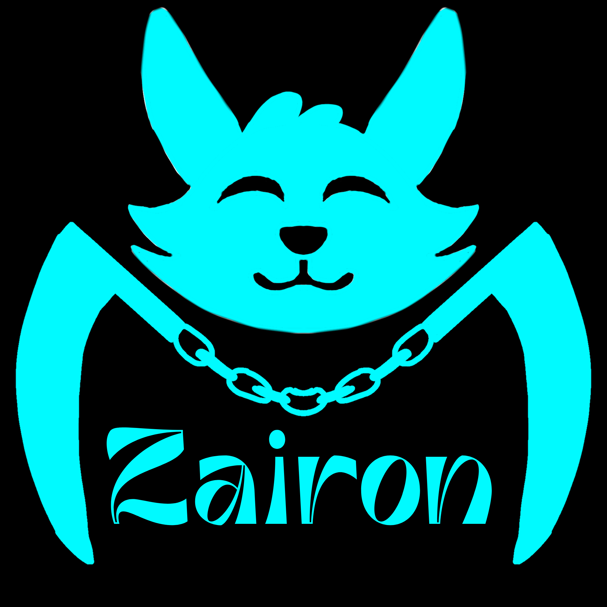
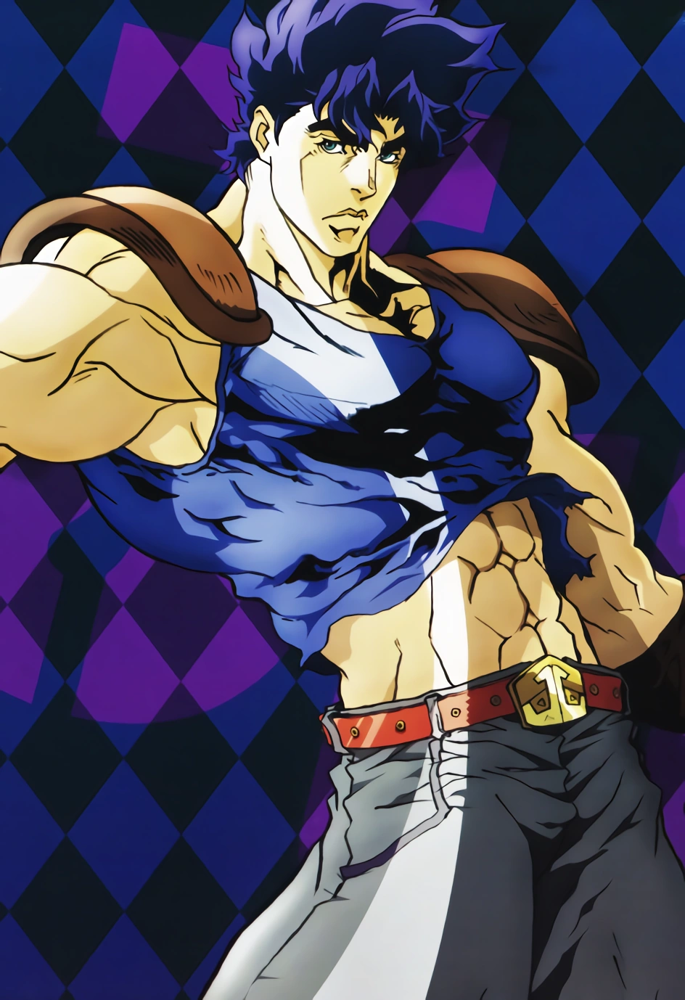
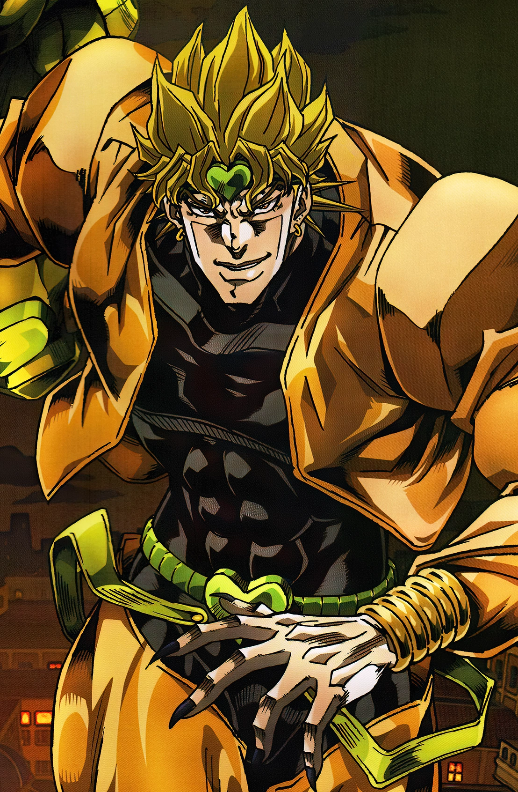

Araki es el escritor del manga Jojo's Bizarre Adventure

Jonathan Joestar es el protagonista de la primera parte de Jojo's Bizarre Adventure

Dio Brando es el antagonista principal de la primera parte de Jojo's Bizarre Adventure